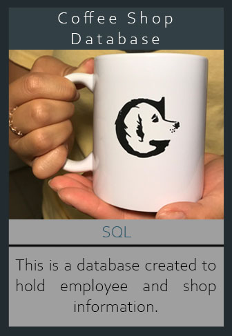
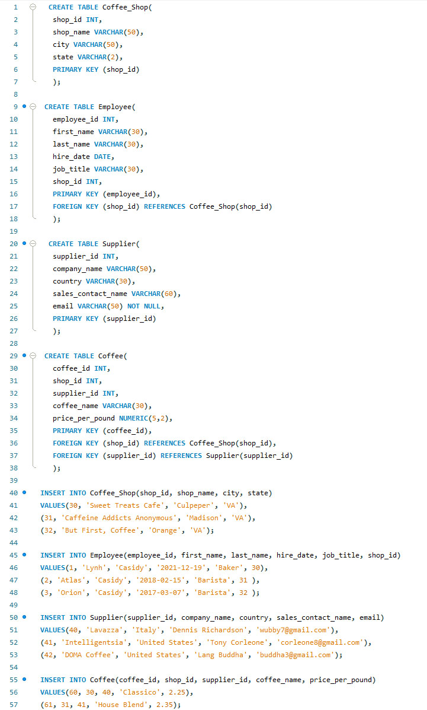
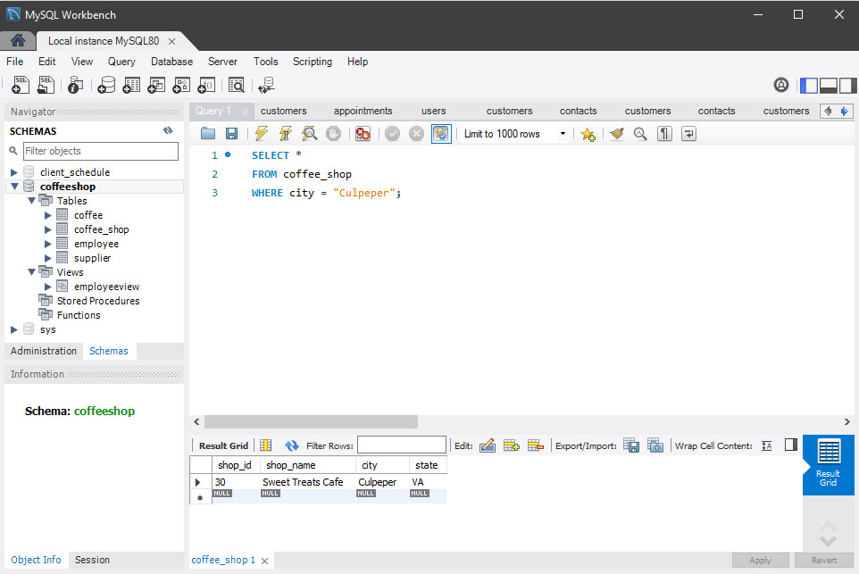
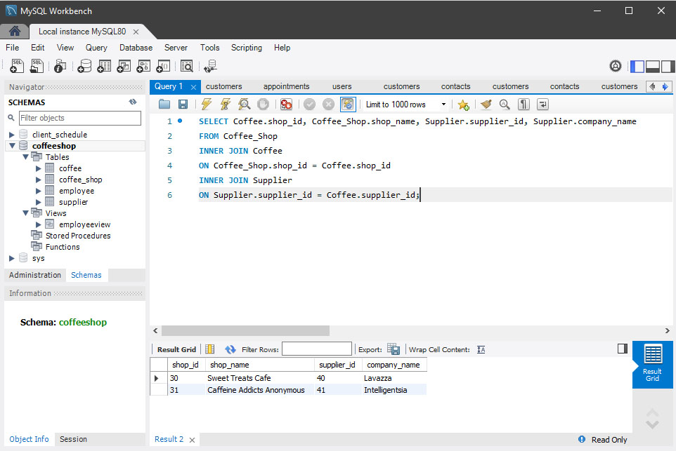
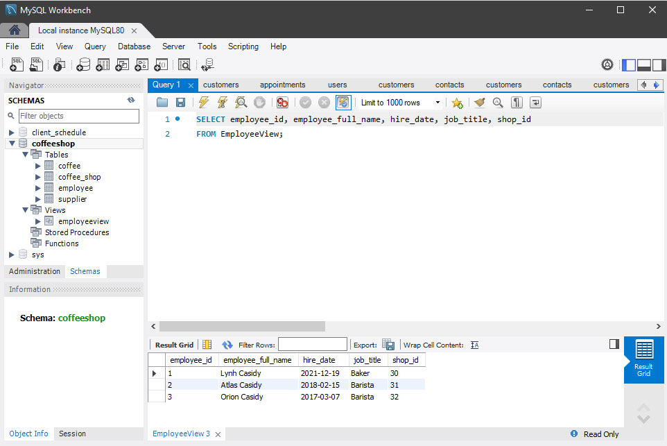

Coffee Shop Database
 OverviewThis project created a database that stores information about a coffee shop, employees who work there, suppliers used, and the coffee brand used. After creating tables to hold the information, I inserted about three different sets of data for each table. To display my knowledge with using SQL, I have written code to filter coffee shops in a specific city, joining two tables, and creating a new view to display employees. When creating the new view, I concatenated the first and last name to display the employee's full name.
Takeaway
I learned the different types of relationships between entities and how to create an Entity Relationship Diagram (ERD). This is my first project working with SQL, so I struggled a little bit with understanding the relationship types. Eventually, I figured out a way to understand it better by creating scenarios in my head for each attribute that I am trying to pair. Overall, it has given be a better understanding on relationship types, entities, attributes, primary and foreign keys, and using an ERD.
Tools
● SQL Fiddle
● MySQL Workbench
Language(s)
● SQL
Project Output
Initial creation of tables for the schema.

View all coffee shops in a specific city.

Joining two tables to display supplier information.

View specific columns from a created view.

◁ Student Planning Mobile App ATM Selections ▷